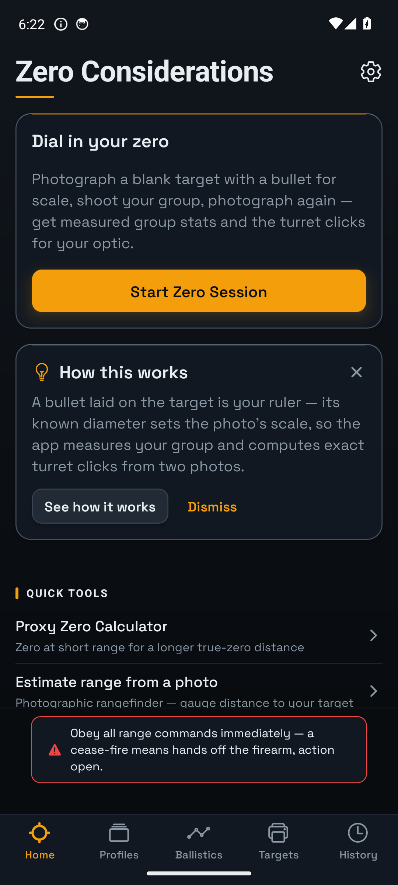
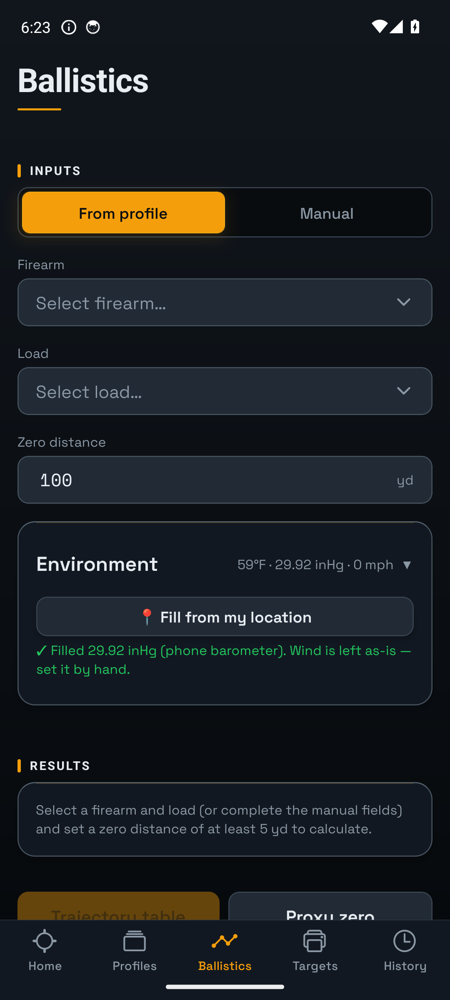
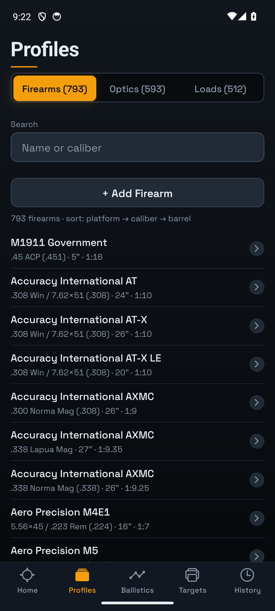
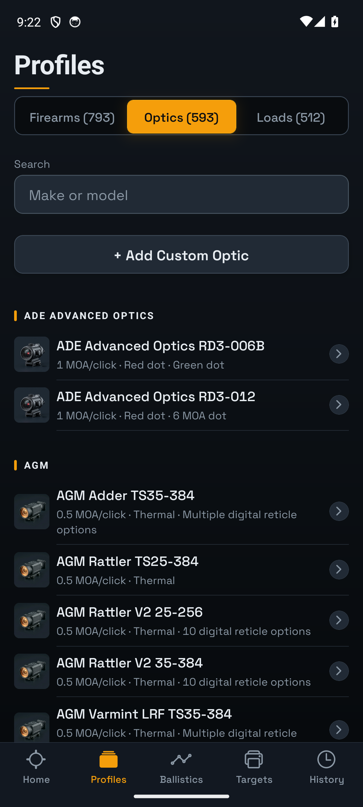

Zero Considerations
Photograph your target. Get the exact clicks. Works with no signal.
Free for testers, everything unlocked. Android takes one extra step — it's right below.
Photograph your target. Get the exact clicks. Works with no signal.
Free for testers, everything unlocked. Android takes one extra step — it's right below.
Takes about two minutes. It's free, nothing is locked, and there's no account to create.
groups.google.com/g/zeroconsiderations-testers
play.google.com/apps/testing/com.zeroconsiderations.app
If Play says “App not available” or “item not found”: you're either not in the tester group yet, or your phone's Play Store is signed in to a different Google account than the one you joined the group with. Use the same account for both, then reopen the opt-in link. Group membership can take a minute to reach Play.
Questions or problems — davidmccoybiz@gmail.com.
Shoot a group, photograph it, and the app measures it in real inches and tells you how many clicks to turn — for your optic, your load, and your distance. Then it can work backwards from that group to true your muzzle velocity and BC, so your dope matches the rifle you actually own.
Measures your group from a photo and converts point-of-impact error into turret clicks — no math, no guessing at fractions of an inch.
Back out true muzzle velocity and ballistic coefficient from a photographed group at a known distance.
See your actual reticle at magnification with real subtensions, so you know your holdovers before you shoot.
Drop, wind, and energy in MOA, MIL, or clicks, with environment pulled from your phone's sensors.
Primary optic, 45° offset, laser, and irons — each with its own height over bore and its own zero.
Everything runs on the phone. No account, no signup, no ads, no tracking, no signal required.




Every preset traces back to a manufacturer's published figure. Where a manufacturer doesn't publish something, the app says so instead of inventing it.
Print these at 100% on any home printer. The four corner markers let the app set the photo's scale and find your aim point automatically — the most accurate way to use it. Free to download and use, app or no app.
Downloads coming here shortly — for now they generate inside the app under the Targets tab.
No. Everything runs on the phone. The one optional network call is pulling current weather, and only if you tap the button.
No account, no email, no login. Your rifles, loads, and photos never leave your device.
No. It trues your velocity from observed drop, which is a good practical estimate, not a chronograph reading.
It can estimate range from a photo of a known-size object. That's useful at short and mid range, not a substitute for a laser rangefinder.